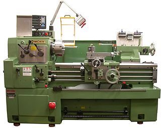

Tokarka- Jest obrabiarką, która jest przeznaczona do obróbki skrawaniem przedmiotów, których najczęściej powierzchnia ma kształt brył obrotowych, czyli stożków, kul, gwintów i wałków. Głównymi używanymi podczas pracy na tokarce są: nóż tokarski, wiertło oraz narzędzia do gwintowania. Obrabiany przedmiot jest montowany w uchwycie lub kłach.

Frezarka
- Obrabiarka przeznaczona do obróbki skrawaniem materiałów o płaskich i kształtowych powierzchniach takich jak na przykład gwinty, koła zębate. Głównym narzędziem wykorzystywanym w frezarce jest frez, czyli wieloostrzowe narzędzie skrawające, które przemieszcza się ruchem obrotowym i służą do obróbki powierzchni płaskich oraz kształtowych przedmiotów za równo wykonanych z metalu, drewna oraz tworzy sztucznych. Najczęstszym ruchem podczas pracy frezarki, który powoduje skrawanie freza jest ruch obrotowy, dodatkowo frez przesuwa się wzdłuż obrabianego materiału. Wyróżniamy frezarki jednowrzecionowe oraz wielowrzecionowe.
Strugarka
Obrabiarka przeznaczona do obróbki skrawaniem płaszczyzn. W strugarkach występują ruchy skrawania takie jak: ruch główny prostoliniowy, ruch posuwowy prostoliniowy i okresowy. Rozróżniamy:
Strugarki ogólnego przeznaczenia
Strugarki specjalizowane
Strugarki do kół zębatych, do obróbki blach i tym podobnych
Strugarki specjalnie
Strugarki wzdłużne – posiadają ruchomy stół z obrabianym przedmiotem i nieruchome narzędzie skrawalcznie
Strugarki poprzeczne – posiadają ruchome narzędzie skrawające i nieruchomy przedmiot
Strugarki pionowe, które są inaczej zwane dłutownicami
Dłutownica
Obrabiarka do obróbki skrawaniem, ruch prostoliniowy w płaszczyźnie pionowej jest ruchem głównym. Narzędzie skrawające są bezpośrednio montowane w przyrządzenie służącym do przymocowania narzędzi w obrabiarce zwanym imakiem. Narzędzia mogą być również zamontowane w specjalnych oprawkach wraz z niosącym je suwakiem
Przeciągarka
służy do przeciągania materiału. Wyposażone są w ostrza przeciągaczy, które skrawają warstwy materiału obrabianego, przesuwając się względem części, która aktualnie podlega obróbce.